Pte. Perón 3330 · San Martín

Música ardorosa para gente revoltosa
Rock en vivo
Music & Food
Música ardorosa para gente revoltosa
Rock en vivo
Music & Food
Orange Bar presenta
rock en vivo, tributos y fiestas en Pte. Perón 3330

Luz roja,
neón y ruido.
Bandas en vivo, tributos y fiestas. La barra, los carteles de neón y la gente revoltosa de San Martín.
¡Te guardamos lugar para el show!